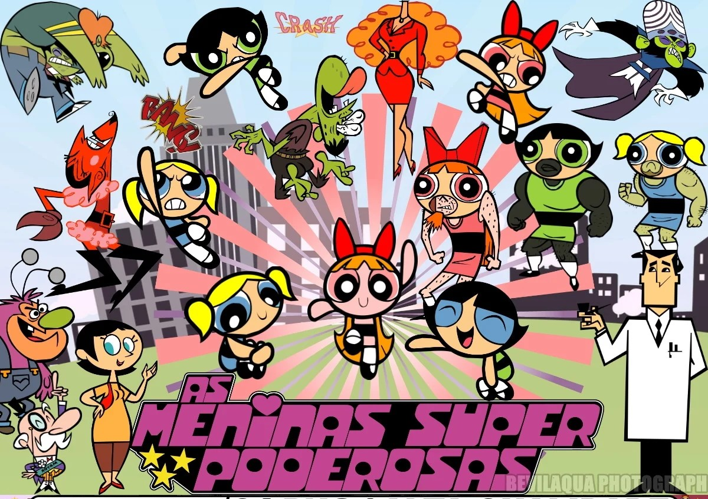

Menu
- Inicío Super Poderoso
- As Meninas Super Poderoras
- Episódios e Temporada
- Aventuras das Meninas Surper Poderosas
- O Professor Utônio
- Vilões Famosos
- Cidade de Townsville
- Reboots e Filmes
- Curiosidades e Bastidores
As Meninas Superpoderosas* é um desenho animado criado por Craig McCracken e lançado em 1998 pelo Cartoon Network. A história gira em torno de três meninas com superpoderes — Florzinha, Lindinha e Docinho — criadas acidentalmente pelo Professor Utônio ao misturar "açúcar, tempero e tudo que há de bom" com o Elemento X. Juntas, elas protegem a cidade de Townsville de vilões e monstros. O desenho mistura ação, humor e temas sobre amizade e justiça. />